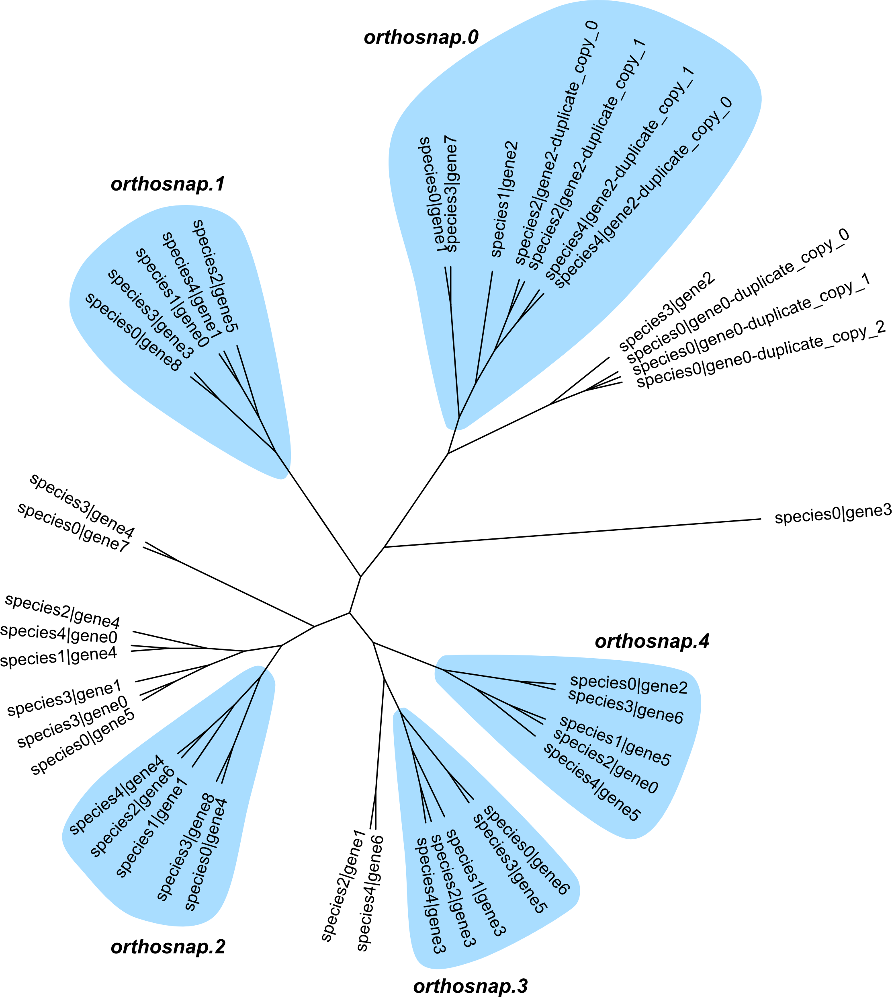

Tutorial¶
orthosnap enables researchers to obtain single-copy subgroups of orthologous genes. Single-copy subgroups of orthologous genes are phylogenetically-informative and can be used for molecular evolution analyses. This tutorial covers the easy-to-implement workflow needed for using orthofisher.
Note, this tutorial assumes orthosnap has already been installed. For installation instructions, please see the home page.
1) Download the test data¶
For ease of use, this tutorial will rely on a small dataset, which can be downloaded using the following link:
Download test data:
tutorial dataset
Next, unzip the downloaded directory and change directory to the newly downloaded directory.
$ tar -zxvf dataset.tar.gz
$ cd path_to_unzipped_directory/dataset
2) Run orthosnap¶
Running orthosnap requires two arguments: -f/--fasta, which specifies the unaligned orthologous group of sequences, and -t/--tree, which species the phylogeny inferred from the orthologous group of sequences. Thus, orthosnap would be run using the following command:
$ orthosnap -f fake_orthologous_group_of_genes.faa -t fake_orthologous_group_of_genes_tree.tre
3) Inspect output¶
Toward the end of what is printed to the stdout, you will see the following text:
Subgroups of single-copy orthologous genes identified: 5
Output files:
fake_orthologous_group_of_genes.faa.orthosnap.0.fa
fake_orthologous_group_of_genes.faa.orthosnap.1.fa
fake_orthologous_group_of_genes.faa.orthosnap.2.fa
fake_orthologous_group_of_genes.faa.orthosnap.3.fa
fake_orthologous_group_of_genes.faa.orthosnap.4.fa
This means that five single-copy orthologous subgroups of genes were identified. Each subgroup was written to a different file titled fake_orthologous_group_of_genes.faa.orthosnap.N.fa. Each subgroup can be used for various molecular evolution analyses (e.g., phylogenetics, dN/dS, etc.)
To provide a little more detail about what orthosnap did, the following figure visualizes each subgroup in the original inputted phylogeny.
In orthosnap.0, species 2 and species 4 have duplicate copies of gene 2. After automated detection of duplicate sister sequences (or sequences that belong to the same polytomy), orthosnap will keep the longer of the two sequences following PhyloTreePruner. This follows the standard for transcriptomic data wherein the longest isoform is often kept. Reevaluation of the pruned subtree results in the inference of a single-copy subgroup of orthologous genes.
Although the species names and gene names have been replaced, the underlying data stems from real sequences of protein transporters in five Aspergillus species. Similar to the species tree, species4 and species2 are sister to one another; species4 and species2 are sister to species1; and species4, species2 and species2 are sister to species3 and species0. This follows our observation described in the original manuscript wherein subgroups of single-copy orthologous genes are often as accurate and robust inferred as ‘traditional’ single-copy orthologous genes.
Thank you for checking out orthosnap!